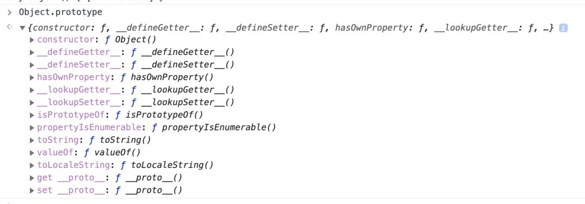
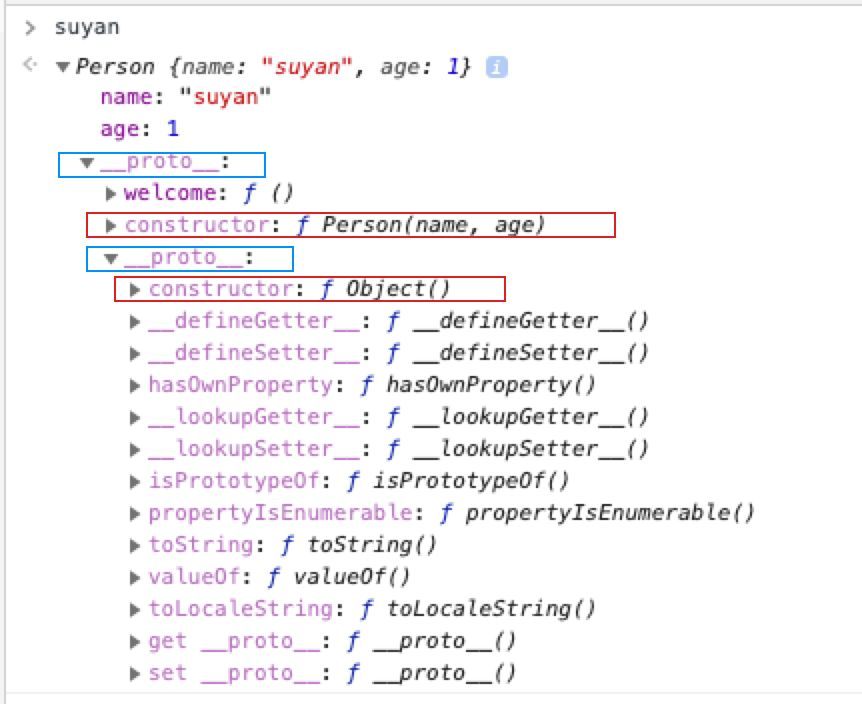
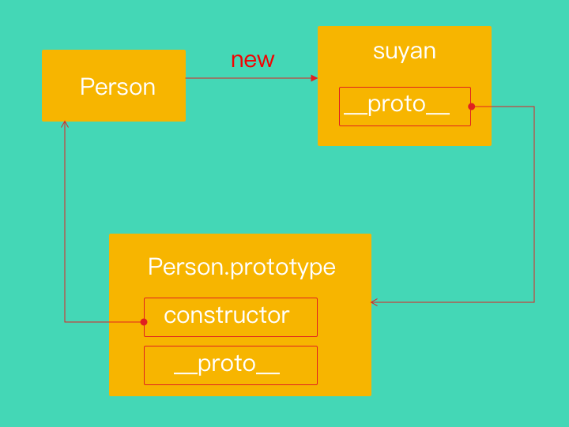
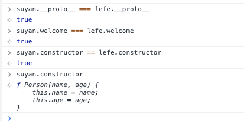
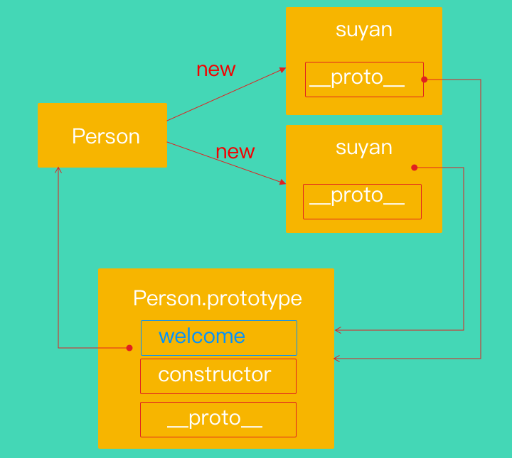
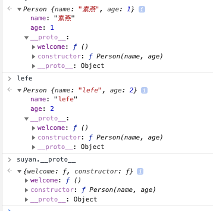
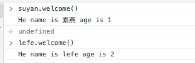
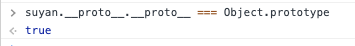
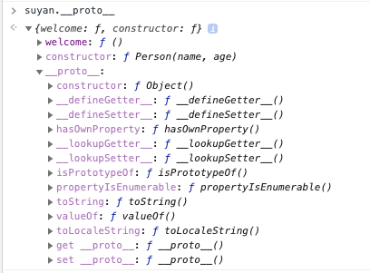
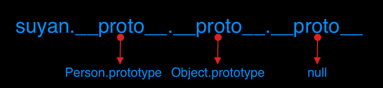

# 用故事说透 JavaScript 中的原型
当我学习JavaScript原型的时候，我被很多概念搞晕了，无奈之下，我写下了本文，希望能够给你一些启发。本故事纯属虚构，旨在搞懂原型。
昨天的课程 JavaScript 内置对象数组 阅读量并不高，其实也比较重要，别看到「数组」就以为自己都会了。
在地球的一角，荒无人烟，就在 2020 年的时候，这里奇迹般地出现了一位神人，此人生来便拥有一身本领，起名为 Object，寓意为创造万物，万物之源。
「公众号素燕注」这里的 Object 就是 JavaScript 中的 Object 对象，所有对象都会指向它。
一天，Object 想着自己活在这个地方太孤单，心想：“如果能造一些和我一样的人类该多好，这样他们就可以帮我干活了。他们需要继承我的能力，这样他们可以直接干活，不需要后续培养干活的能力”。
Object 身怀绝技，他把自己的能力交给了一个叫 prototype 的家伙管理着。如果想获取自己的能力，直接输入指令 Object.prototype 即可获取到。
「公众号素燕注」这里的prototype就是函数原型，Object其实是一个函数。下面这张图是在 Chrome 浏览器 Console 工具中输入 Object.prototype 得到。

Object 决定先造一批人类，起名为 Person。说着，他抬起手指在空中写下：
function Person(name, age) {
this.name = name;
this.age = age;
this.welcome = function() {
console.log('哇哇，Hi, I am ', this.name);
};
}
这些字符就如同一个「人体模板」，约定了一个人该有的特征。以后如果想创建人类的时候只需通过这个「人体模板」创建一个人类即可。随后 Object 挥着手指在天空中创建了 1万个人。
for (let i = 0; i < 10000; i++) {
// 起名为 Object-i，年龄为 1岁
const person = new Person('Object-' + i, 1);
// 人类出身后，说的第一句欢迎语
person.welcome();
}
「公众号素燕注」在 JavaScript 中可以通过 new 来创建一个对象，new 后面是一个函数，通常把这个函数称为构造函数，也就是创建对象时要调用的方法。
Object 立马发现，人类出生的欢迎语完全可以放到人类共有的能力中，这样就可以节约更多资源。Person 的公共能力被 Person.prototype 这个家伙掌控着。随后 Object 在天空中写道：
function Person(name, age) {
this.name = name;
this.age = age;
}
Person.prototype.welcome = function() {
console.log('哇哇，Hi, I am ', this.name);
};
「公众号素燕注」在 JavaScript 中每个「函数」都会有一个属性 prototype，函数名 Person 的 P 大写，这只是一个约定，表明它是一个构造函数，你完全可以写成 person。
上次下手太狠，一次创造了 1万人，导致这些人是有缺陷的，这次 Object 决定先创建 2 个人，随后在天空中写道：
const suyan = new Person('suyan', 1);
const lefe = new Person('Lefe', 2);
这次创建了 suyan 和 lefe，需要验证是否符合 Object 对人类的要求，说着 Object 打开了天空中的 Chrome，输入下面的指令确认是否一切按着自己的操控进行着:
1.输入 suyan，一副构造图呈现在面前。suyan 这个人除了有 name、age 这两个属性外还有一个属性 proto，proto 属性中包含了一个 welcome, constructor 和 proto：

其实 suyan.proto === Person.prototype，也就是说 suyan 的 proto 属性拥有了人类的共有能力，比如说出欢迎语 welcome。
constructor 这个属性指向构造函数，也就是创建这个对象的函数，当创建人类的时候就通过它来实现。比如创建 suyan 的函数使用的是 Person，那么 suyan 的 constructor 指向的就是 Person 这个函数。

2. suyan 和 lefe 共用一个能力 welcome；welcome 函数定义在 Person 的 prototype 属性中，而 suyan 和 lefe 的 prototype 共用的是同一个，故 welcome 指向同一个函数。



3.suyan 和 lefe 可以发出不同的欢迎语；

调用 welcome 函数的时候，函数内部通过 this 引用当前对象的属性。关于 this 的时候我们会在后面详细讲解。
Person.prototype.welcome = function () {
console.log('He name is ' + this.name + ' age is ' + this.age);
};
4.通过观察 suyan 中的 proto 属性，发现，proto 属性中还有一个 proto 属性，而这个 proto 属性指向 Object 的 prototype。


沿着这条链继续往下挖，发现 suyan.proto.proto.proto 为 null，也就是这条链结束了。其实这条链被称为原型链，用来实现 JavaScript 中的继承。

当一个对象查找某个方法的时候，它首先会在当前对象中查找是否有这个方法，如果没有继续到 proto 属性指向的对象中查找，直到 null 为止。比如，如果在 suyan 这个对象中定义一个方法 welcome：
const suyan = new Person('素燕', 1);
suyan.welcome = function() {
console.log('suyan welcome');
}
suyan.welcome();
当使用 suyan.welcome() 调用时，会调用当前定义的这个函数，不会调用原型中的对象。
Object 确认完所创建的人类都继承了自己的能力，同时人类拥有了属于自己的能力，对此非常满意，决定造 1万人出来。
总结
- 每一个函数都会有一个原型属性 prototype；
2.通过 new + 「函数」 的方式会创建一个对象，这个函数被称为构造函数，浏览器会给被创建的对象添加一个属性 proto，这个属性指向构造函数的 prototype；
3.通过 proto 属性可以实现 JavaScript 中的继承，不过在 ES6 中可以通过关键字 class 定义类来实现继承。
今天的内容比较抽象，不知道大家对原型有没有不同的认识，欢迎大家留言讨论。关于 JavaScript 对象这块内容非常重要，我会花几天时间专门学习。大家加油。
文章来源：https://mp.weixin.qq.com/s/2GOcsgdfFiQkUcvIh3d4zQ